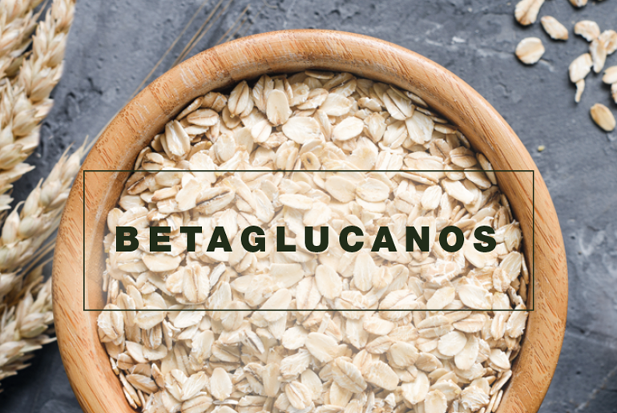

El alga chlorella posee todos los aminoácidos esenciales y no esenciales, vitaminas, enzimas, oligoelementos y minerales fundamentales para la salud.
Su elevada proporción de clorofila hace que actúe como eficaz "limpiador" de toxinas y metales pesados en el intestino, el hígado y la sangre.
Otras propiedades de la chlorella son su efecto antibiótico, regulador del tránsito intestinal e hipocolesterolemiante.
Dosis: 20 gramos al día o 6-7 comprimidos, aunque puede incrementarse sin problemas hasta 60 gramos diarios.
este tratamiento consta de:
---
BETAGLUCANOS

Los betaglucanos son moléculas que se encuentran en una gran variedad de alimentos, especialmente en los cereales y las setas.
Desde el punto de vista estructural, se trata de polisacáridos (hidratos de carbono) y el tipo específico viene determinado por el número de moléculas de glucosa que se ramifican de la estructura básica.
El beta 1,3/1,6 glucano, que se extrae de la levadura del pan y de ciertos tipos de setas como el shitake y el maitake estimula los macrófagos, un tipo de leucocitos que circulan por el torrente sanguíneo y que destruyen los microorganismos causantes de enfermedades y las células que pueden evolucionar a tumorales.
---
DESMODIUM
El Desmodium ascendens es una planta utilizada por los curanderos africanos para combatir diferentes afecciones hepáticas.
El desmodium ejerce una acción antiviral y actúa como protector de las células hepáticas. Resulta muy efectivo en el tratamiento de las hepatitis (virales, crónicas y tóxicas), ya que disminuye las transaminasas en solo seis semanas de tratamiento.
Las alergias, el asma y las inmunodeficiencias en general mejoran con la incorporación de desmodium, así como las úlceras de estómago, el estreñimiento y los dolores de cabeza de origen hepático.